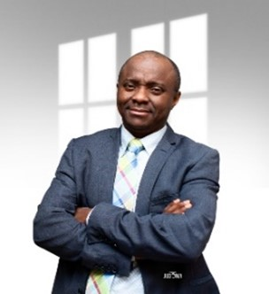

Executives and Committee
The Executive Committee consists of the Chair, the Chair-Elect, the First Vice Chair/Secretary, the Second Vice Chair/Treasurer, and the Immediate Past Chair. The Executive Committee exercises powers of the Board of Directors between meetings of the Board.
The Executive Director is a non-voting member of the Executive Committee.
JOHNSON AINA, P. Engr
PRESIDENT
Johnson Aina, President of the Nigerian Members
Chapter of Engineers Geoscientists Manitoba, is a highly experienced
engineer with over 12 years in project management. Currently a Project Manager
at City of Winnipeg Transit, he holds a first-class bachelor's degree in mechanical
engineering and a master's degree in mechanical and materials engineering.
His career spans roles at Master Rand Cabinets Inc.,
StandardAero Limited, and Motor Coach Industries.
GBOLADE OLADAPO, P.Engr
VICE PRESIDENT
Gbolade Oladapo, Vice Chair of the Nigerian Members Chapter of Engineers Geoscientists Manitoba,
is an IT/Telecommunications engineer with 15+ years of experience.
Specializing in Project and Change management,
he holds a B.Sc in Electrical/Electronics engineering from the
University of Lagos and a Masters in Engineering Management from
the University of Ottawa. Currently an IT Infrastructure Analyst with
the Government of Canada.
SAMPSON ONIS, P. Engr
TREASURER
Onis Sampson is the Treasurer of the Nigerian
Members Chapter of Engineers Geoscientists Manitoba since 2020.
He holds a bachelor's degree in electrical and electronic engineering
from the University of East London and a master's degree in electrical
and computer engineering from the University of Manitoba.
Currently a Project Engineer at Stantec Consulting.
VICTOR ADEBAYO, E.I.T.
SECRETARY
Victor, Secretary of the Nigerian Members Chapter
of Engineers Geoscientists Manitoba, is a Civil Engineer with 10+ years
of diverse experience. He holds a Bachelor's and Master's in civil engineering
and is pursuing a Construction Management degree at Red River College.
A certified professional with memberships in EGM, CTTAM, COREN, NSE, and PMI,
Victor is passionate about knowledge empowerment. His
interests include meeting people, reading, traveling, creative writing, and soccer.

OLASENI JAMES ASHAYE, E.I.T., PMP, MNSE, COREN
PUBLIC RELATION OFFICER
Olaseni James Ashaye is the PR Officer for the Nigerian Members
Chapter of Engineers Geoscientists Manitoba, with over 20 years of experience
in civil engineering and certified project management. He holds a bachelor's
and master's degree in civil engineering, along with a Post Baccalaureate Diploma
in Engineering from the University of Manitoba. Currently a Structures Engineer
at Manitoba Transportation and Infrastructure, James specializes
in minor structure rehabilitation and major structures (bridge construction) projects.
CHUKWUDI OBIEFUNA, E.I.T
ASST PUBLIC RELATION OFFICER
Chukwudi Obiefuna, Assistant PR Officer for
the Nigerian Members Chapter of Engineers Geoscientists Manitoba, brings
20+ years of experience in structural engineering, with expertise in commercial,
infrastructural, and industrial buildings. Currently at WSP Canada, he specializes
in structural designs, reviews, and condition assessments.
Chukwudi holds a master's degree in structural engineering.
VICTOR ADINDU, P. Engr
IMMEDIATE PAST PRESIDENT (IPP- EX-OFFICIAL)
Victor Adindu, Immediate Past President of the Nigerian Members
Chapter of Engineers Geoscientists Manitoba, holds a B.Eng in
Mechanical Engineering and M.Sc in Safety Engineering & Risk Management.
With over 13 years at Manitoba Hydro, he excels as a team lead for mechanical
and civil engineering, specializing in air systems,
oil processing, and maintenance programs for mechanical assets.

.jpg)


 EGM: NIGERIAN MEMBERS
EGM: NIGERIAN MEMBERS